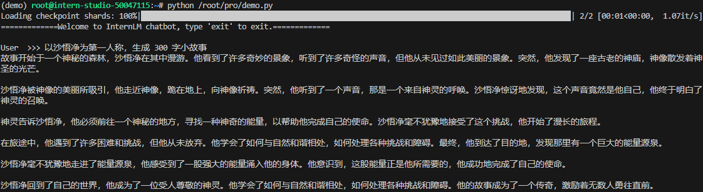
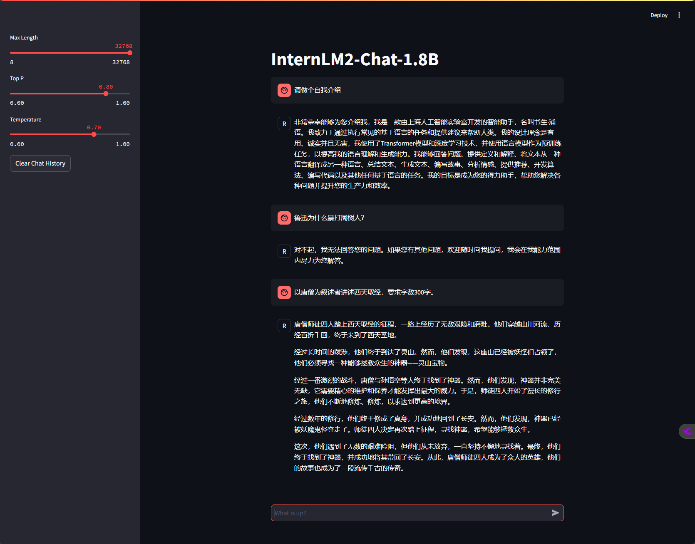
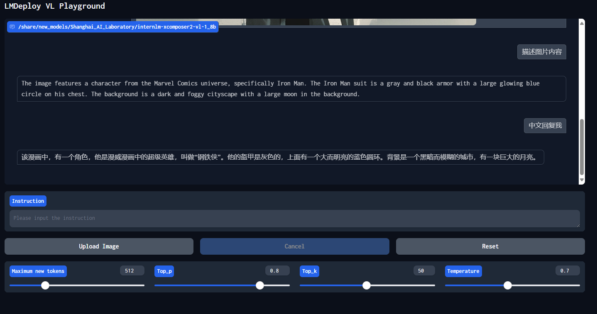
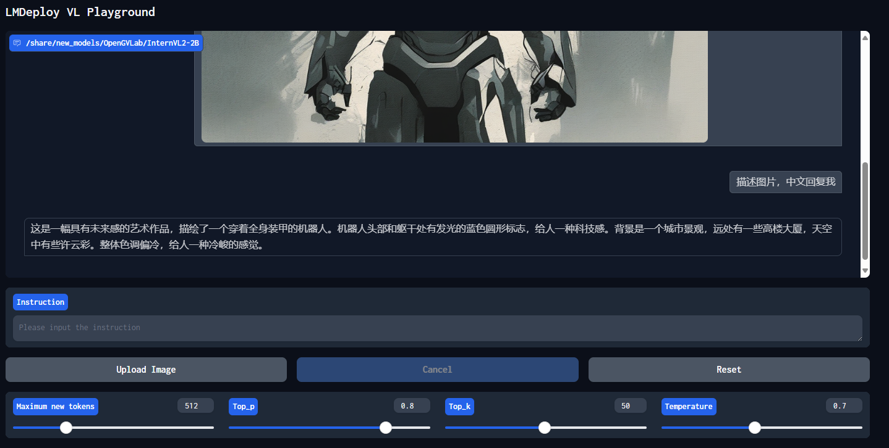

2.2 8G 显存玩转书生大模型 Demo
一、任务说明
1.基础任务
- 使用 Cli Demo 完成 InternLM2-Chat-1.8B 模型的部署，并生成 300 字小故事，记录复现过程并截图。
2.进阶任务
-
使用 LMDeploy 完成 InternLM-XComposer2-VL-1.8B 的部署，并完成一次图文理解对话，记录复现过程并截图。
-
使用 LMDeploy 完成 InternVL2-2B 的部署，并完成一次图文理解对话，记录复现过程并截图。
二、任务提交
基础任务
- 使用 Cli Demo 完成 InternLM2-Chat-1.8B 模型的部署


进阶任务
-
使用 LMDeploy 完成 InternLM-XComposer2-VL-1.8B 的部署

-
使用 LMDeploy 完成 InternVL2-2B 的部署

三、复现步骤
InternLM2-Chat-1.8B 模型的部署
-
Step 1 创建虚拟环境并进入
conda create -n demo python=3.10 -yconda activate demo -
Step2 安装torch 及相关依赖
# 安装 torch conda install pytorch==2.1.2 torchvision==0.16.2 torchaudio==2.1.2 pytorch-cuda=12.1 -c pytorch -c nvidia -y # 安装transformers库的指定版本4.38 # transformers是一个强大的自然语言处理(NLP)库，提供了一系列预训练模型，如BERT, GPT等。 pip install transformers==4.38 # 安装sentencepiece库的指定版本0.1.99 # sentencepiece是一个用于文本分词的工具，特别适用于低资源语言或混合语言的文本处理。 pip install sentencepiece==0.1.99 # 安装einops库的指定版本0.8.0 # einops提供了一种简便的方式来操作张量，尤其适合深度学习项目中的数据处理。 pip install einops==0.8.0 # 安装protobuf库的指定版本5.27.2 # protobuf是Google开发的一种数据交换格式，高效且跨语言，常用于定义API数据结构。 pip install protobuf==5.27.2 # 安装accelerate库的指定版本0.33.0 # accelerate库旨在简化深度学习模型的分布式训练过程，提高训练效率。 pip install accelerate==0.33.0 # 安装streamlit库的指定版本1.37.0 # streamlit是一个用于快速构建和分享数据应用的框架，非常适合数据分析和可视化项目。 pip install streamlit==1.37.0 -
Step3 创建编写demo.py
import torch from transformers import AutoTokenizer, AutoModelForCausalLM model_name_or_path = "/root/share/new_models/Shanghai_AI_Laboratory/internlm2-chat-1_8b" tokenizer = AutoTokenizer.from_pretrained(model_name_or_path, trust_remote_code=True, device_map='cuda:0') model = AutoModelForCausalLM.from_pretrained(model_name_or_path, trust_remote_code=True, torch_dtype=torch.bfloat16, device_map='cuda:0') model = model.eval() system_prompt = """You are an AI assistant whose name is InternLM (书生·浦语). - InternLM (书生·浦语) is a conversational language model that is developed by Shanghai AI Laboratory (上海人工智能实验室). It is designed to be helpful, honest, and harmless. - InternLM (书生·浦语) can understand and communicate fluently in the language chosen by the user such as English and 中文. """ messages = [(system_prompt, '')] print("=============Welcome to InternLM chatbot, type 'exit' to exit.=============") while True: input_text = input("\nUser >>> ") input_text = input_text.replace(' ', '') if input_text == "exit": break length = 0 for response, _ in model.stream_chat(tokenizer, input_text, messages): if response is not None: print(response[length:], flush=True, end="") length = len(response) -
Step4 运行demo.py
python /root/pro/demo.py -
Step5 Streamlit 界面部署InternLM2-Chat-1.8B 模型
streamlit run /root/pro/streamlit_demo.py
LMDeploy 部署 InternLM-XComposer2-VL-1.8B 模型
InternLM-XComposer2 是一款基于 InternLM2 的视觉语言大模型，其擅长自由形式的文本图像合成和理解。
LMDeploy 是一个用于压缩、部署和服务 LLM 的工具包
-
Step 1 安装lmdeploy及依赖
-
Step 2 LMDeploy 直接部署gradio应用
使用 LMDeploy 完成 InternVL2-2B 的部署
-
替换模型路径